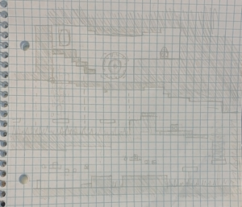
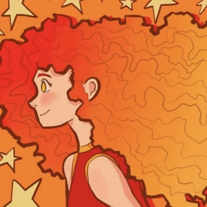

About StoryGate Studios
StoryGate Studios is a small fictional indie game development company. We are fairly new and have not finished any games yet but are deep in development for a couple PC games. In the future, we hope to publish multiple games and become a deeper part of the game development community.
Two main projects are currently in development, the former being a simple charming platformer and the latter being a longer, more in-depth choose-your-own-adventure type game with multiple endings and a deep story.
Meet the Staff
StoryGate Studios was created by Sasha Cheek, who is the lead dev in all the current projects. Working with Sasha are one music composer and two game testers who wish to remain unnamed for the time being. As the projects expand and development progresses, the staff team may expand to include more developers and other members.
Sasha sometimes shares information about the projects on their YouTube, Instagram, and Discord, which you can find linked below. Once the games are developed, they may appear on Steam, NewGrounds, and Itch.io as well. Feel free to take a look and support us in our journey!